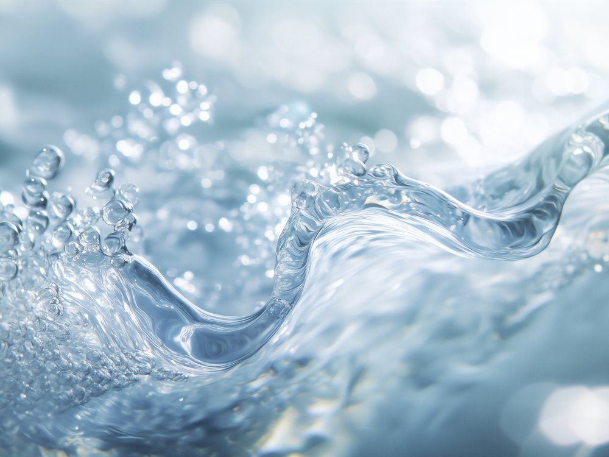

인증 · 수상
- CES Innovation Award
- TIPS 선정 / Scale-up
- 연구소기업 인증
- 벤처기업 인증
ABOUT US
보이지 않던 물의 상태를 데이터로 바꾸는 기술로, 더 안전한 일상과 산업을 만듭니다.

01 COMPANY
2016년 설립된 더웨이브톡은 KAIST의 광학 기술을 기반으로, 레이저와 AI를 활용한 수질·미생물 측정 솔루션을 개발합니다. 크고 느린 기존 장비의 한계를 넘어, 작고 빠르며 정확한 측정으로 상수도·산업·의료 현장의 물 관리 방식을 바꾸고 있습니다.
02 VISION
더웨이브톡은 누구나 어디서나 물의 상태를 즉시 확인할 수 있는 세상을 만듭니다. 혁신적인 센서 기술로 사람과 환경을 보호하는 것이 우리의 목표입니다.
레이저 신호를 증폭해 눈에 보이지 않는 미세 입자와 미생물을 감지합니다.
측정 데이터를 학습한 AI가 오염 여부와 농도를 실시간으로 판별합니다.
작은 크기 덕분에 상수도 설비부터 생산 라인까지 어디에나 설치할 수 있습니다.
03 HISTORY
원천기술 확보부터 제품 양산과 글로벌 수상까지, 측정 기술을 꾸준히 고도화해 왔습니다.
2016
회사 설립 · TIPS 선정 · 레이저 기반 박테리아 검출 특허 등록
2017
연구소기업 인증 · 초기 투자 유치
2018
시리즈 A 투자 유치 · 미국 특허 등록
2020–2021
다수 기관 수상 · 시리즈 B 투자 유치
2022
TIPS Scale-up 선정 · 제품 상용화 본격화
2023 이후
CES Innovation Award 수상 등 기술력 인정 · 적용 분야 확대
04 CERTIFICATION
PARTNERS & CUSTOMERS
파트너·고객사 로고가 들어가는 영역입니다. (이미지 교체 예정)
도입 상담과 협업 제안을 환영합니다.